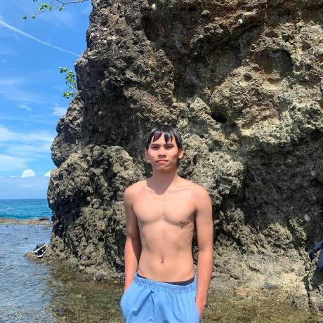

About Myself

Name:
CLARK JUSTIN S. ALGARME
Birthday:
October 12, 2007
Adress:
P-7, Upper Tamusan, Alubijid, BTA, ADN
Job:
Student Assisstant
My Childhood
When I was a child, I loved going outside and playing with my friends. We used to play games like patintero, sungka, hide-and-seek, and syato (or sekyo base, depending on the local name). Sometimes, we got scolded or spanked because we stayed out so long that we barely went home. But whenever my parents weren't around, we would spend the whole day playing and wandering around. Sometimes, my friends and I would also climb trees to pick mangoes and guavas together.
My Teenage Life
When I became a teenager, I didn't play outdoor games as much anymore because most of my friends were already busy. One day, we watched an anime called Inazuma Eleven GO, which is about soccer. After watching it, my cousin suggested that we join the soccer team at our school.
We decided to try out, and we were both accepted. After that, we joined different competitions and won several medals. Sometimes we became champions, and other times we finished in first place in different tournaments.
A year later, something unfortunate happened. Our goalkeeper broke his arm during a game. Because of that, my mom told me to stop playing soccer while I was still safe because she was worried the same thing might happen to me. I followed her advice and quit the team. My cousin, however, decided to continue playing. A few days later, he also broke a bone, so he stopped playing soccer as well.
My Adulthood
In my adulthood, I have become very busy with school. I have many assignments, activities, and exams to prepare for because I want to pass my subjects and become an honor student. I don't get to spend much time playing with my friends anymore because they are also busy with their own responsibilities. Whenever I have free time, I usually play basketball with some of my friends.